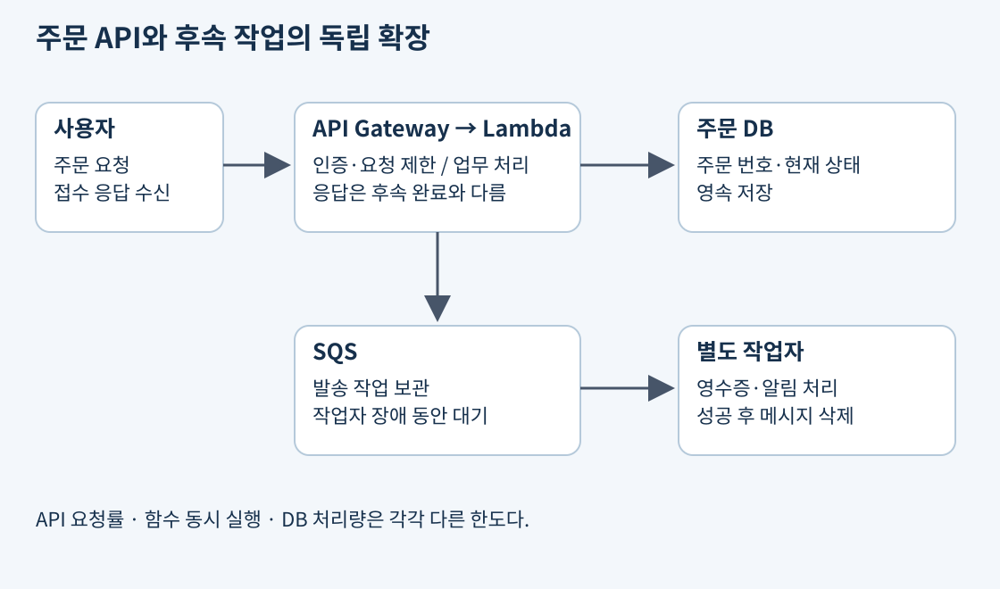
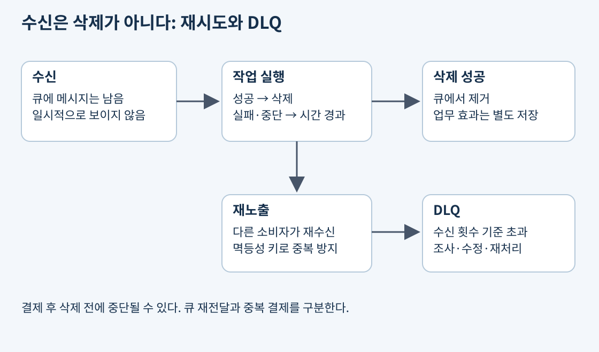
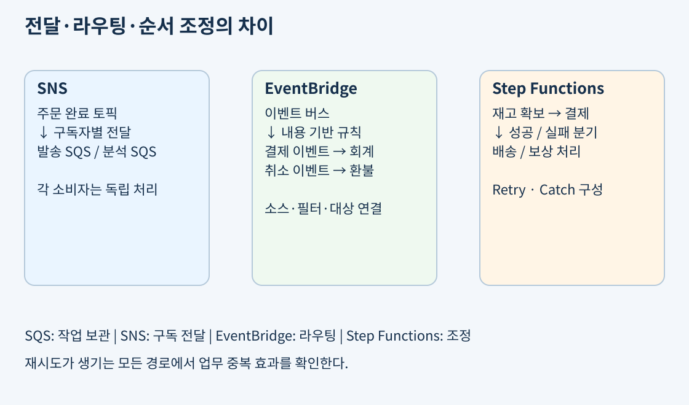
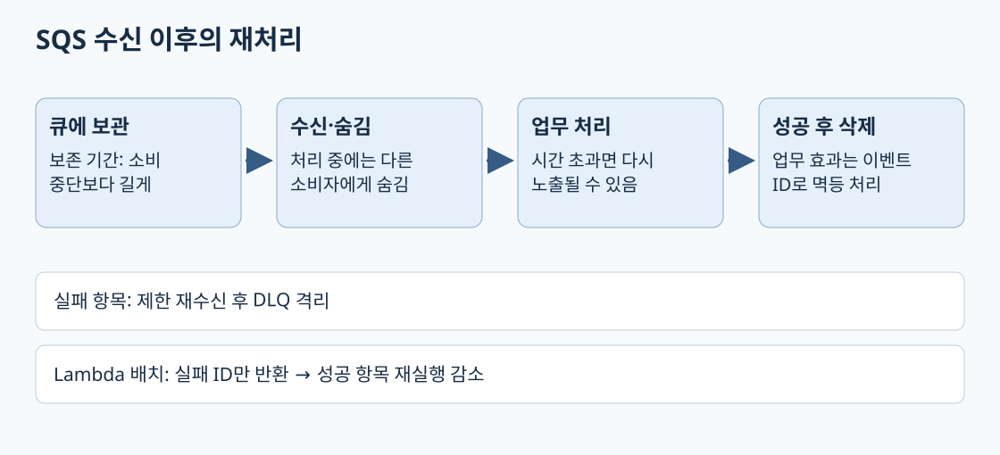
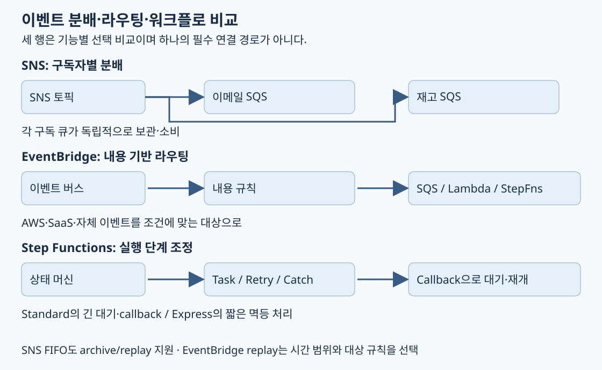

쇼핑몰에서 주문을 받으면 주문 번호는 바로 돌려줘야 하지만, 영수증 이메일이나 통계 집계까지 사용자가 기다릴 필요는 없다. 모든 작업을 한 HTTP 요청 안에 넣으면 이메일 서비스가 느려지는 순간 주문 API도 느려진다. 요청을 받는 부분과 후속 작업을 나누면 각 부분을 따로 확장하고 실패한 작업만 다시 처리할 수 있다.
동기 호출은 호출자가 결과를 기다리는 방식이다. 비동기 처리는 먼저 접수하고 실제 처리를 나중에 수행한다. 비동기 응답의 “접수됨”은 결제·배송까지 성공했다는 뜻이 아니다. 사용자에게 보여줄 작업 상태와 실패 시 보상 방법을 따로 설계해야 한다.

그림에서 API Gateway는 HTTP의 입구, Lambda는 실행할 코드, SQS는 대기 작업의 보관 장소다. DynamoDB 같은 저장소에는 주문 상태를 남긴다. Lambda 실행 환경의 메모리나 임시 파일을 주문 원장으로 삼지 않는다. 같은 주문이 다음번 호출에서 다른 실행 환경으로 갈 수 있기 때문이다.
주문 DB 저장과 SQS 전송은 별도 호출이다. 둘 사이에 장애가 나면 주문은 저장됐지만 발송 작업은 빠질 수 있다. 신뢰성 요구가 높으면 DB 트랜잭션에 발송할 이벤트도 함께 남기는 아웃박스와 재전달·멱등 처리를 검토한다. 전체 구성은 14일 차의 주문 처리 예와 연결된다.
출처: Lambda 실행 환경, SQS Standard 활용 · 트랜잭셔널 아웃박스
AWS Lambda는 이벤트에 반응해 코드를 실행하며 기반 서버의 프로비저닝과 운영을 AWS가 맡는 서비스다. 고객은 함수 코드, 런타임 선택, 실행 역할, 메모리, 제한 시간과 외부 연결을 관리한다. “서버리스”는 서버가 없다는 뜻이 아니라 고객이 서버 대수를 직접 운영하는 책임을 줄인다는 뜻이다.
여기서는 일반적인 Lambda 기본 실행 모델을 다룬다. 실행 환경 초기화 뒤 함수 핸들러를 실행하며, 준비된 환경이 재사용될 수 있다. 새 환경을 준비하는 초기화 지연을 콜드 스타트라고 한다. 라이브러리 로딩, 초기 연결과 초기화 코드가 지연에 영향을 준다. 재사용은 보장되지 않으므로 전역 변수에 저장한 값이 항상 남는다고 가정하지 않는다. 재사용되는 환경에도 이전 사용자의 민감한 요청 데이터를 남기지 않는다.
일반 Lambda 함수 호출의 제한 시간은 최대 900초(15분)로 설정한다. 이 한도는 여기서 다루는 기본 실행 모델의 호출에 관한 것으로, 동기 호출에만 적용되는 한도라는 뜻은 아니다. 긴 작업은 큐에서 나눠 실행하거나 워크플로로 조정한다. 최신 Lambda에는 다른 실행 모델도 있으므로 일반 호출의 제한을 모든 Lambda 기능에 똑같이 적용하지 않는다. 시험의 구조 판단에서는 짧은 이벤트 처리와 장기 실행 서버의 차이를 먼저 본다.
출처: 실행 환경 수명 주기와 초기화, Lambda 제한 시간
Lambda 기본 모델에서는 메모리 설정에 비례해 CPU 성능도 배정된다. 메모리를 늘리면 메모리 부족만 해결하는 것이 아니라 계산 작업도 빨라질 수 있다. 반대로 외부 API 응답을 기다리는 함수는 CPU를 늘려도 대기 시간이 크게 줄지 않을 수 있다. 실제 처리 시간과 사용량을 측정해야 한다.
일반 온디맨드 함수 비용은 요청 수와 메모리·실행 시간에 따른 계산 사용량 등을 함께 본다. 메모리를 두 배로 늘렸는데 시간이 절반보다 더 줄었다면 총 계산 비용이 줄 수도 있다. 최소 메모리가 언제나 최저 비용은 아니다. 로그 수집, 데이터 전송, API Gateway와 큐 사용료도 합쳐야 전체 요청 비용이 보인다.
출처: Lambda 메모리와 CPU, Lambda 요금 항목
동시 실행 수는 같은 순간 처리 중인 호출의 개수다. 초당 요청 수와 같지 않다. 초당 100개 요청이 오고 평균 실행 시간이 0.2초라면 평균 동시 실행은 대략 20이다. 평균 시간이 2초로 늘면 같은 요청률에서도 약 200이 필요하다. 이 계산은 평균 부하 추정이며 짧은 폭증과 다른 처리량 제한은 별도로 확인한다.
| 설정 | 목적 | 준비된 실행 환경 | 주의점 |
|---|---|---|---|
| Reserved concurrency | 함수에 동시 실행 몫을 확보하면서 상한도 설정 | 미리 초기화하지 않음 | 다른 함수가 쓸 공용 몫을 줄임 |
| Provisioned concurrency | 실행 환경을 미리 초기화해 시작 지연을 줄임 | 지정한 용량 준비 | 준비 용량에 별도 비용 발생 |
Reserved concurrency를 30으로 설정하면 해당 함수의 실행이 무한히 늘어나 DB를 압박하는 것을 제한할 수 있다. 그러나 콜드 스타트를 제거하는 설정은 아니다. Provisioned concurrency는 지연 요구가 엄격한 API에서 검토한다. 준비량을 넘는 요청과 계정·함수의 다른 한도까지 해결해주는 기능은 아니다.
출처: Lambda 동시 실행과 설정 비교, Reserved concurrency, Provisioned concurrency
API Gateway는 API 주소를 제공하고 요청을 백엔드로 연결한다. 인증·인가, 요청 제한, 모니터링 같은 입구의 기능을 담당한다. DB에 어떤 주문을 쓸지 판단하는 업무 코드는 Lambda나 다른 백엔드에 있다. API Gateway를 쓴다고 백엔드의 처리 능력과 DB 연결 수가 자동으로 무한해지지 않는다.
| 종류 | 적합한 요구 | 구분할 기능 |
|---|---|---|
| HTTP API | 단순한 HTTP API, JWT 기반 접근 통제, 비용과 간결함 | REST API의 모든 관리 기능을 제공하지 않음 |
| REST API | 요청 검증, 사용량 계획·클라이언트별 제한, API 캐시 등 | 필요한 기능과 추가 비용을 비교 |
| WebSocket API | 채팅·실시간 알림처럼 연결을 유지하며 양방향 전달 | 일반 요청·응답 HTTP와 연결·메시지 관리가 다름 |
REST API와 HTTP API는 모두 HTTP 기반 API를 만들 수 있다. REST라는 설계 스타일과 AWS 상품명 REST API를 혼동하지 않는다. HTTP API도 RESTful하게 구성할 수 있다. 지원 기능은 상품별로 확인하며 REST API 캐시 기능을 HTTP API에도 있다고 가정하지 않는다.
출처: REST API와 HTTP API 비교, WebSocket API
인증은 누가 요청했는지 확인하고, 인가는 그 요청을 허용할지 정한다. IAM, Cognito 또는 JWT authorizer, Lambda authorizer 등 선택지는 API 종류에 따라 다르다. API 키는 사용량 식별과 계획에 쓰이며 사용자 인증의 대체 수단으로 취급하지 않는다.
스로틀링은 짧은 시간에 과도하게 들어오는 요청을 제한한다. 예를 들어 설계상 초당 100건을 허용하는 입구와 동시 실행 30인 함수는 서로 다른 단위를 제어한다. 함수가 느려지면 입구 요청률이 그대로여도 함수가 먼저 한도에 이를 수 있다. 제한 응답을 받은 호출자는 지수 백오프와 지터를 사용하되 중복 요청의 부작용도 처리해야 한다. 사용량 계획의 제한은 최선 노력 방식이므로 절대적인 지출 상한으로 삼지 않는다.
캐시는 같은 조회의 응답을 재사용해 백엔드 호출을 줄인다. 주문 변경처럼 상태를 바꾸는 작업을 무작정 캐시하면 안 된다. 사용자별 응답은 캐시 키와 접근 통제를 설계하지 않으면 다른 사용자의 정보가 섞일 수 있다. 캐시가 인증을 대신하지 않는다.
출처: API 키와 사용량 계획, REST API 캐시, 요청 스로틀링
dev와 prod 같은 stage는 배포를 구분하는 단위다. /v1/orders와 /v2/orders는 클라이언트에게 공개하는 계약 버전을 표현할 수 있다. 운영 stage 안에 여러 API 버전을 제공할 수도 있으므로 둘을 같은 말로 외우지 않는다. 버전 변경은 필드 삭제나 의미 변경이 기존 앱에 미치는 영향을 고려한다.
출처: REST API stage
SQS는 생산자가 넣은 메시지를 소비자가 받아 처리하는 큐다. 주문 접수 서버는 발송 작업을 넣고, 작업자는 자기 속도로 꺼낸다. 소비자가 잠시 느려져도 큐에 쌓아둘 수 있지만 보관 기간과 처리 기한은 유한하다. 큐는 처리 능력을 만들지 않으므로 적체가 계속 늘면 소비자 확장이나 병목 제거가 필요하다.
Standard 큐는 최소 한 번 전달 방식이어서 같은 메시지가 여러 번 오거나 순서가 달라질 수 있다. “두 번 받지 않을 것”이 아니라 “두 번 받아도 결과가 잘못되지 않을 것”을 설계한다. 여러 소비자가 한 큐를 읽으면 작업을 나눠 받는다. 모든 소비자에게 같은 메시지를 한 번씩 주는 방송 구조와 다르다.
출처: Standard 큐 전달 특성

메시지를 수신해도 곧바로 큐에서 삭제되는 것은 아니다. Visibility timeout 동안 다른 소비자에게 일시적으로 보이지 않게 되고, 처리가 성공하면 삭제한다. 작업자가 죽거나 삭제가 실패해 시간이 지나면 다시 보일 수 있다. 처리 중 timeout이 먼저 만료되면 다른 작업자가 같은 작업을 실행할 수 있으므로 처리 시간에 맞춰 설정하고 필요하면 연장한다. 이 설정도 Standard 큐의 중복 가능성 자체를 없애지는 않는다.
Dead-letter queue(DLQ)는 지정한 수신 횟수를 넘겨도 처리되지 않는 메시지를 따로 모은다. 잘못된 데이터 하나가 계속 재시도되어 전체 처리량을 소모하는 것을 분리한다. DLQ에 들어갔다고 업무가 해결된 것은 아니다. 알림, 원인 확인, 수정, 재처리와 중복 방지까지 필요하다. 지나치게 작은 재시도 횟수는 일시적인 장애도 영구 실패처럼 분리할 수 있다.
출처: Visibility timeout, DLQ와 redrive
멱등성은 같은 요청을 반복해도 의도한 최종 효과가 한 번 수행한 것과 같도록 만드는 성질이다. 결제 완료 후 메시지 삭제 직전에 작업자가 중단되면, 다음 작업자는 이미 결제가 끝난 사실을 알아야 한다. 주문 번호와 작업 종류를 멱등성 키로 저장하고 조건부 쓰기나 트랜잭션을 이용한다. 단순히 “처리했나 조회 → 결제”만 하면 동시 작업자 둘이 같은 조회 결과를 보고 중복 결제할 수 있다.
FIFO 큐는 메시지 그룹별 순서를 유지하고 제한된 중복 제거 구간 안에서 전송 중복을 억제한다. 같은 그룹의 순차 처리는 처리량에 영향을 준다. 서로 독립적인 주문을 다른 그룹으로 나누면 병렬성을 높일 수 있다. 큐가 순서와 전송 중복을 관리해도 외부 결제 시스템까지 하나의 원자적 트랜잭션으로 묶지는 않는다. 소비자 재시도에 대비한 업무 멱등성은 여전히 필요하다.
출처: FIFO 중복 제거, FIFO 전달과 메시지 그룹
SNS는 토픽에 발행한 메시지를 여러 구독자에게 전달하는 발행·구독 서비스다. 주문 완료 이벤트를 이메일 큐와 분석 큐에 각각 전달하면 두 소비자는 독립적으로 처리한다. SNS 자체를 소비자가 나중에 마음대로 꺼내 읽는 작업 큐로 생각하지 않는다. 내구성 있는 대기는 각 SQS 구독 큐가 맡도록 조합할 수 있다. 구독 필터로 관심 메시지를 고르는 것도 가능하다.
EventBridge는 이벤트 내용과 규칙에 따라 대상을 선택하는 이벤트 버스 역할을 한다. 예를 들어 source=orders, detail-type=OrderPaid, detail.region=KR 조건에 맞는 이벤트를 해당 처리기로 보낸다. AWS 서비스·자체 앱·지원 SaaS 이벤트를 연결할 때 검토한다. SNS에도 필터 기능이 있으므로 “필터가 있으면 무조건 EventBridge”가 아니라 이벤트 소스·라우팅·통합 조건을 비교한다. 버스 종류와 보관·재생 설정에 따라 보장이 다르므로 이벤트 버스를 영구 업무 원장으로 자동 간주하지 않는다.
출처: SNS와 SQS 구독, SNS 구독 필터, EventBridge 구성

Step Functions는 상태 머신으로 작업의 순서, 분기, 병렬 실행과 대기를 조정한다. 재고 확보 → 결제 → 배송 요청을 연결하고, 일시적인 결제 오류는 Retry로 재시도하며 최종 실패는 Catch로 보상 경로에 보낼 수 있다. 결제 취소나 재고 반환은 직접 정의할 업무다. 워크플로가 자동으로 모든 외부 효과를 롤백하지 않는다. 무제한 재시도 대신 오류별 재시도 횟수와 간격을 설계한다.
Amazon MQ는 ActiveMQ나 RabbitMQ 기반 메시지 브로커를 관리한다. 기존 애플리케이션이 JMS API나 AMQP 같은 브로커 연동을 사용하고 대규모 코드 재작성을 피해야 할 때 검토한다. 엔진별 API·프로토콜 호환성과 브로커 용량·고가용성 구성을 확인해야 한다. 신규 AWS 애플리케이션의 큐 요구라는 이유만으로 MQ를 고르기보다 SQS와 운영 부담을 비교한다.
Amazon AppFlow는 Salesforce 같은 SaaS와 S3·Redshift 등 지원 대상 사이의 데이터 흐름을 구성한다. 영업 데이터를 정기적으로 분석 저장소에 모으는 경우에 적합하다. 임의의 모든 SaaS API를 자동 연결하거나 거래별 분산 트랜잭션을 보장하는 서비스는 아니므로 커넥터·필드 매핑·실행 조건을 확인한다.
출처: Amazon MQ, Amazon AppFlow
이벤트 소싱은 현재 상태만 덮어쓰는 대신 주문 생성·결제·취소 같은 상태 변화 이벤트를 원장으로 보존하고 현재 상태를 재구성하는 설계다. 메시지를 한 번 큐에 넣었다고 이벤트 소싱이 되는 것은 아니다. 이벤트 스키마의 버전, 중복 처리, 순서, 보관·재생과 개인정보 삭제 정책을 설계해야 한다. 감사와 재처리에 유리하지만 구현과 저장·조회 비용이 늘 수 있다.
구조를 분리하면 API와 작업자가 각자 확장하지만 호출·메시지·상태 전이·로그·데이터 전송 비용이 여러 곳에서 발생한다. 단순한 작업을 지나치게 잘게 나누면 네트워크와 운영 비용이 커진다. 반대로 긴 작업을 한 함수에 몰면 장애 범위와 재실행 비용이 커진다. 주문당 비용과 실패 복구 시간을 함께 보며 경계를 정한다.
출처: 이벤트 기반 아키텍처 패턴, Step Functions 요금
주문 API, 발송 큐, 결제 작업자와 분석 구독자를 종이에 연결해본다. 사용자가 응답을 받는 시점과 결제가 확정되는 시점을 표시한다. 작업자가 결제 직후 중단되는 경우를 따라가며 메시지 재전달과 중복 결제를 어떻게 구분할지 설명한다. 이어 API 요청률, 함수 동시 실행, DB 처리량 중 하나만 줄었을 때 어느 곳에 대기나 오류가 생기는지 설명한다.
핵심은 접수, 처리, 삭제를 구분하는 것이다. SQS의 보존 기간은 큐가 메시지를 보관하는 기간이고 visibility timeout은 수신한 메시지를 다른 소비자에게 잠시 숨기는 기간이다. 소비자가 72시간 멈출 수 있다면 보존 기간을 그보다 길게 두고 복구·재처리 여유도 확보한다. SQS 보존은 최대 14일이다. 2분 작업에 가시성 20초를 주면 첫 작업자가 아직 일하는 동안 두 번째 작업자에게 노출된다. 성공한 뒤 삭제하고 긴 작업은 가시성을 연장한다. 숨겼다고 완전한 중복 방지가 되지는 않으므로 업무 효과를 멱등하게 만든다.
Standard 큐는 최소 한 번 전달하고 순서가 바뀔 수 있다. FIFO 큐는 같은 MessageGroupId 안에서 도착 순서를 유지한다. 주문 ID를 그룹으로 쓰면 주문별 직렬 처리와 주문 간 병렬 처리를 함께 얻는다. 큐에 늦게 도착한 과거 업무 이벤트를 FIFO가 업무 생성 순서로 되돌려주지는 않는다. 송신자가 순서대로 전송하거나 업무 버전 번호로 검증해야 한다. FIFO 송신 중복 제거 창은 5분이며 며칠 뒤 같은 주문을 다시 보내는 외부 결제의 중복 방지를 대신하지 않는다.
반복 실패하는 poison message는 maxReceiveCount에 따른 redrive policy로 DLQ에 격리한다. DLQ에는 경보·조사·수정 후 재전달 경로를 둔다. DLQ만 만들면 실패 원인이 고쳐지거나 자동으로 정상 처리되는 것은 아니다. Lambda SQS 배치의 한 항목만 실패할 때 ReportBatchItemFailures를 켜고 실패 messageId만 응답하면 성공 항목까지 반복하지 않는다. FIFO에서는 순서를 지키려고 첫 실패 뒤 아직 처리하지 않은 항목도 실패 목록으로 반환한다.

출처: SQS 보존과 가시성, FIFO 중복 제거, Lambda 부분 배치 실패.
SNS는 주제를 구독하는 대상에 분배한다. SNS → 소비자별 SQS를 두면 재고 소비자가 빨라도 알림 소비자는 자기 큐에서 며칠 대기할 수 있다. 같은 큐를 두 서비스가 경쟁 수신하면 각 메시지가 둘 모두에게 전달되는 구조가 아니다. EventBridge는 source·detail-type·detail 필드의 패턴으로 버스 이벤트를 대상에 연결한다. Archive는 수집한 이벤트를 보관하고 replay는 지정 시간 범위의 이벤트를 원래 버스로 다시 보낸다. 선택한 활성 규칙으로만 replay를 보내면 실시간 배송 규칙을 끄지 않고 회계 복구만 실행할 수 있다. 시간 범위는 이벤트의 time 값을 기준으로 하며, 아카이브 도착 시각이나 별도 업무 시각 필드와 같다고 가정하지 않는다. replay는 순서·업무 중복 제거를 보장하지 않는다.
Standard Step Functions는 상태를 내구성 있게 보관하고 최대 1년 실행한다. retry를 명시하지 않은 상태의 재실행을 방지하는 실행 의미가 외부 API의 업무 효과까지 exactly-once로 보장하는 것은 아니다. 비동기 Express는 최대 5분·최소 한 번 실행, 동기 Express는 최대 5분·최대 한 번 실행이며 후자는 결과를 기다린다. Express는 실행 수·시간·메모리, Standard는 상태 전환 수로 과금하므로 2초에 50단계를 수행하는 고빈도 멱등 작업과 며칠 승인 대기를 같은 기준으로 선택하지 않는다. Express는 callback task token·job .sync 패턴을 지원하지 않는다.
예를 들어 좌석 확보 뒤 20분 결제 승인을 기다리면 Standard callback으로 task token을 전달하고 SendTaskSuccess/Failure로 재개한다. Lambda를 20분 계속 실행하지 않는다. Retry는 제한된 일시 오류를 다시 시도하고 Catch는 최종 실패 경로로 좌석 반환을 연결한다. 이미 성공한 결제를 취소하는 것은 DB rollback이 아니라 별도 보상 작업인 saga이며 보상도 실패·중복에 대비해야 한다.

출처: SNS와 SQS 분배, 아카이브 replay, 워크플로 유형, callback.
구성 예·오류 시점과 외부 효과의 원자성은 서버리스 심화에서 이어진다. 이 본문의 실행 계약은 핵심이며, 심화의 SQL·상태 머신 예는 구성을 직접 검토하는 보충 깊이다. 구분은 실제 기출 빈도를 보장하지 않는다.
공식 자료 확인일: 2026-11-02